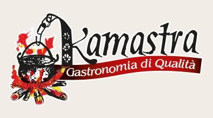
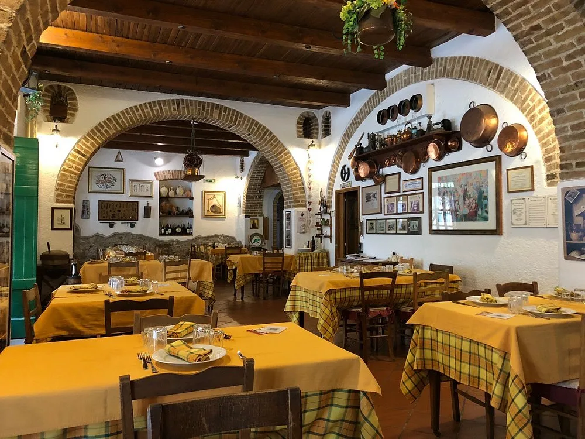
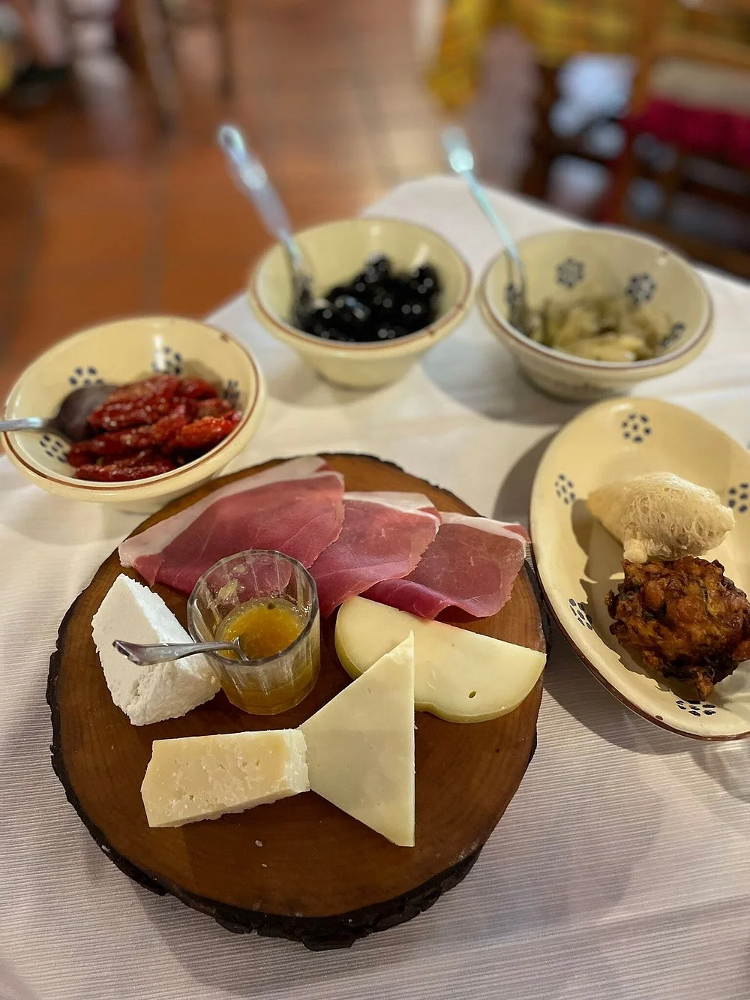
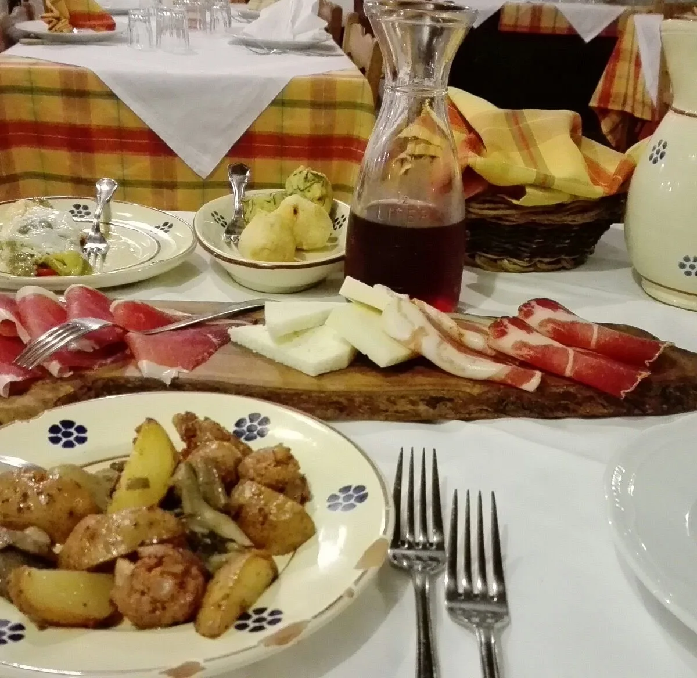
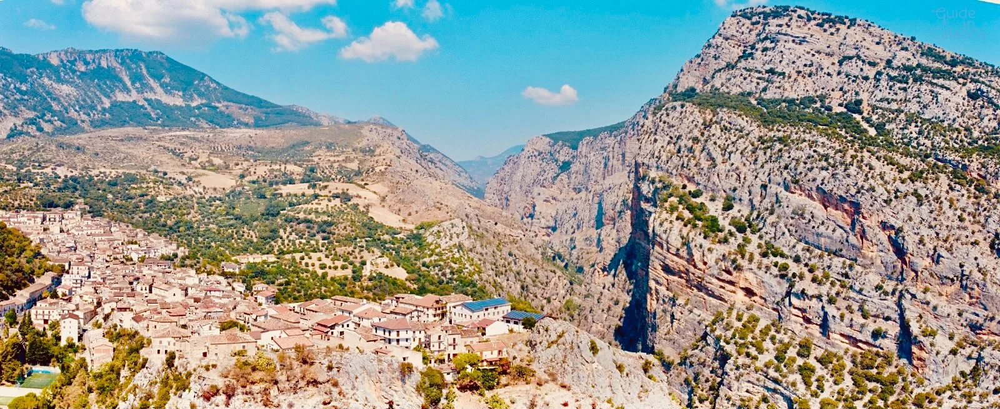

Antipasto Kamastra
Salumi, formaggi, sottoli, sottaceti e frittelle.
 Immagine dimostrativa · video in arrivo
Immagine dimostrativa · video in arrivo
A Civita, tra ricordi di famiglia e tradizioni arbëreshe, ogni sapore racconta una storia.
Scopri la nostra cucina
Kamastra nasce a Civita, tra le mura di un’antica filanda. Un luogo di lavoro diventato un luogo d’incontro.
Dal 1995, la cucina arbëreshe e le risorse del territorio raccontano una passione: riunire le persone intorno alla tavola e farle sentire sempre a casa.
Un ricordo alla volta. Tocca una fotografia per guardarla da vicino.
Ti aspettiamo a Civita
La nostra cucina, tra tradizione, territorio e ospitalità.
Modulo dimostrativo. Gli orari sono preferenze, non disponibilità verificate. Per prenotare: 0981 73387.

Prenota un tavoloCIVITA, CALABRIA · DAL 1995
Le radici arbëreshe, i sapori del Pollino.
Il piacere semplice di stare a tavola.

01 / IL RISTORANTE
Tra gli archi in mattoni e le travi di una vecchia filanda, Kamastra accoglie chi ha voglia di fermarsi. Il ristorante nasce nel 1995 dall’intuizione di Enzo Filardi, nel cuore di Civita.
Qui le tradizioni arbëreshe incontrano la terra calabrese. Un legame che ritrovi nei piatti, nei gesti e nel piacere di condividere la tavola.
La nostra terra, la nostra tavola.02 / LA CUCINA
La pasta di casa, i sapori dell’orto,
le ricette che custodiscono una memoria.
La nostra cucina comincia da qui.

Un tagliere al centro, un assaggio da condividere. Il tempo di sedersi e lasciare che siano i sapori a parlare.

03 / I VINI
I vini calabresi accompagnano il racconto della cucina. Lasciati consigliare un abbinamento e prenditi il tempo di scoprirlo.
Un agrume del territorio, una storia che continua nei prodotti di Casa Kamastra.
04 / SCOPRI CIVITA
Un incontro tra paesaggio e cultura.
Fermati a Civita e porta con te
il sapore di questa terra.

COME ARRIVARE
LE VOCI DEGLI OSPITI
Scopri le esperienze di chi si è già seduto alla nostra tavola.
Leggi le recensioni su TripadvisorORGANIZZA LA TUA VISITA
Chiamaci per gli orari e la disponibilità. Saremo felici di accoglierti.
+39 0981 XXXXXA TAVOLA CON NOI